Carbon below,
life above.
Pyrogenic Carbon Capture and Storage (PyCCS) solutions that build soil, sequester carbon, restore ecosystems and build a sustainable future for generations to come.
Restoring Land. Immobilising Toxins.
Securing the Future.
Science-backed biochar solutions for heavy metal immobilisation in Zambian post-mining soils.
Zambia's Mining Legacy
Zambia's economy has long been powered by mining — with decades of extraction leaving behind tailings dams and overburden materials posing severe environmental and human health risks. Cities like Kabwe are severely polluted with Lead (Pb) and Zinc (Zn) from past mining activities, creating toxic hotspots that threaten water tables and communities.
Standard reclamation efforts often fail to address the root issue: the bioavailability of these toxins, compounded by yearly rainfall. At Green Cycle we don't just cap the problem — we neutralise it.
A permanent "lockbox"
for heavy metals.
Produced through pyrolysis, our carbon-rich material possesses a porous structure and high surface area suited to the diverse chemistry of Zambian mine soils.
Physical Encapsulation
The microporous structure traps metal ions like Copper (Cu), Lead (Pb), and Cadmium (Cd), preventing them from leaching into groundwater or runoff into waterways.
Ion Exchange
Our biochar binds with metal cations, effectively removing them from soil solution permanently and preventing re-mobilisation during rainfall events.
pH Modification
Biochar raises the pH of acidic mine tailings, triggering the hydrolysis of metal ions into stable, insoluble forms that remain locked in place.
We don't deal in theory.
We deal in data.
The Small Footprint Forest
with a Giant Impact.
Functional, fast-growing native forests that bind carbon from day one. A forest does not need to be a thousand hectares to save the world.
Microforestry is Green Cycle's proprietary approach to creating ultra-dense, biodiverse pocket forests in spaces as small as a parking space or a factory perimeter. Derived from the proven Miyawaki Method, these are not traditional gardens — they are functioning ecosystems designed to replicate the complex layering of a native Zambian forest.
We take barren land — be it a corporate campus, a rehabilitated tailings dam, or the edge of a solar farm — and turn it into a self-sustaining carbon sink that sequesters carbon from the moment the first sapling touches the soil.
Every tonne of biochar locks away ~2.5 tonnes of CO₂e immediately.
Biochar-amended soil retains 50% more water, boosting sapling survival to over 90%.
In post-mining applications, biochar immobilizes residual Cu, Pb, Zn preventing root uptake.
Urban Solutions for
Zambia's Industrial Landscape.
Microforests are the ultimate green infrastructure for a growing industrial and urban landscape.
Industrial & Factory Barriers
A Green Cycle Microforest acts as a living green wall — filtering airborne particulates, reducing ambient temperatures by up to 10°C via evapotranspiration, and creating a visual buffer.
Post-Mining Remediation
We use pioneer native species that tolerate high copper concentrations, combined with our biochar base, to create a phytostabilization cap — stopping erosion and reintroducing biodiversity.
Solar Farm Companionship
Our Microforests cool the microclimate around solar farms, reducing dust accumulation on panels and maximizing energy yield — green infrastructure that pays dividends.
Corporate & Urban Greening
Turn sterile corporate parking lots or hospital grounds into "pockets of hope" — measurable carbon neutrality assets that staff can use for wellness, shade, and ESG reporting.
Why density beats distance.
Traditional tree planting often results in linear rows of single species that take decades to mature. The Miyawaki method mimics a natural forest.
Not 1 per 10m² like conventional planting
Miombo and cryptosepalum forest variants only
No maintenance needed after canopy closes
Achieves what traditional planting takes centuries
Establishment
Intense weeding and watering. Biochar soil matrix is laid down. Carbon sequestration begins immediately.
Explosion
Trees explode in height as they compete for light. Canopy layers begin to form. Biological activity surges.
Independence
Canopy closes. No more weeding needed. The forest is fully self-sustaining — a permanent asset on your land.
Soil is Infrastructure.
It's time to build — not for a season or two, but permanently. The most valuable engineered system on your farm is already beneath your feet.
In agribusiness, we talk about tractors, irrigation pivots, and storage sheds as infrastructure. But soil is living infrastructure — a multi-functional system that supports production, cycles nutrients, manages water, and houses billions of organisms.
Yet conventional farming treats soil as a consumable — mining its fertility season after season, then applying synthetic bandages to compensate. Biochar is not a fertilizer. It is not a compost that disappears after one season. It is a structural upgrade — a permanent, recalcitrant carbon matrix that transforms ordinary soil into a high-performance biological system.

Better foundations
Better plumbingHow biochar upgrades your
soil infrastructure.
Four critical soil functions — permanently engineered, not seasonally patched.
Water Bank
A single gram of biochar can possess a surface area equivalent to a football field. Its porous structure captures and holds moisture, releasing it slowly during dry spells — reducing irrigation frequency and boosting drought resilience.
Microbe Real Estate
Biochar provides countless microscopic pores that serve as protective habitat for beneficial bacteria, fungi (including mycorrhizae), and protozoa — triggering explosive biological activity and better nutrient cycling.
Nutrient Vault
Biochar acts as a cation exchange resin, holding onto positively charged nutrient ions (ammonium, potassium, calcium) and releasing them on demand. Up to 50% reduction in fertilizer leaching.
Thermal Stability
Biochar is recalcitrant carbon — stable in soil for hundreds to thousands of years. It does not decompose. It does not compact. One application. A lifetime of value. You own the soil health; you don't rent it.
Built for Zambian Agribusiness.
Three biochar product lines, each designed for a specific entry point into your farming system.
Raw / Virgin Biochar
Pure, activated biochar produced via high-temperature pyrolysis (600°C) from Zambian agricultural residues — maize cobs, rice husks, poultry litter. No inoculants. No amendments. Just performance-grade carbon.
For: Fertilizer blenders, large-scale agribusinesses, technical farmers
Get a Quote →Activated & Inoculated Biochar
Our soil ready solution. Pre-activated (filled with nutrients) and inoculated (loaded with healthy microbes). Apply directly to the furrow, planting hole or seedling sockets. No lag phase. No guesswork.
For: Horticulture, vegetables, tobacco, high-value row crops, nurseries and agroforestry
Get a Quote →Pyro Black Urea™
A revolutionary product that solves agriculture's most persistent problem: nitrogen loss. We don't coat urea with biochar — we mechanically fuse them through a proprietary pelleting process. The nitrogen is not on the surface; it is integrated throughout the biochar matrix.
For: Large-scale maize, wheat, soybean, and cotton farmers
Get a Quote →Not just a coating.
A mechanical fusion.
Black urea fertilisers are typically surface coated and can rub off, degrade, or fail in the field. Pyro Black Urea is integrated into the biochar matrix — a homogeneous, stable pellet where every particle of nitrogen is physically bound. More value for the farmer, less green house gas emissions for the environment.
| Feature | Conventional Urea | Coated "Black Urea" | Pyro Black Urea™ |
|---|---|---|---|
| Nitrogen retention | Poor (up to 50% loss) | Moderate (coating can fail) | High (mechanical fusion) |
| Biochar integration | None | Surface coating only | Fused throughout the pellet |
| Season-to-season value | Zero (urea is spent) | Minimal | High (biochar remains) |
| Mechanism | Dissolves and leaches | Delayed release | Slow release + adsorption |
| Residual soil value | None | Minimal | Permanent infrastructure |
Stop mining your soil.
Start building it.
Whether you are a fertilizer blender looking for bulk raw material, a commercial farmer ready to try Black Urea™, or simply curious how biochar can reduce your input costs — talk to us.